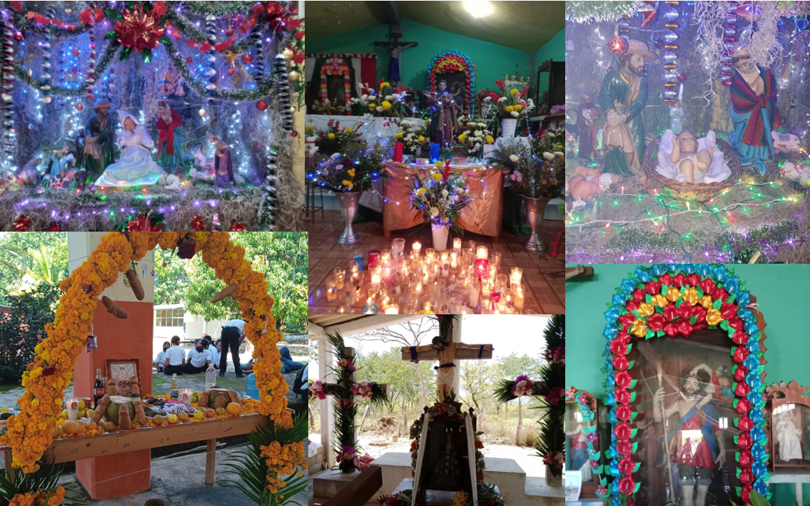

Calendario Festivo
Celebraciones que mantienen viva nuestra tradición
Las festividades de San Cristóbal son una muestra de nuestra fe, cultura y tradiciones ancestrales que se transmiten de generación en generación.
8 de enero
Levantamiento del Niño Dios
Celebración religiosa que marca el final del ciclo navideño.
Semana Santa
Santo Enfierro
Procesiones y representaciones de la Pasión de Cristo.
24 de julio
San Cristóbal
Fiesta patronal en honor al santo protector de la comunidad.
8 de octubre
Virgen del Rosario
Celebración mariana con misas y procesiones.
25 de abril
Feria Anual de San Marcos
Evento comunitario con juegos, comida y música tradicional.
8 de diciembre
Virgen de Juquila
Homenaje a la venerada imagen mariana.
Día de la samaritana
Día de la samaritana
Celebración tradicional con reparto de bebidas típicas.
Importancia Cultural
Estas festividades representan:
Fe
Manifestaciones de la religiosidad popular
Unión
Oportunidad para fortalecer la cohesión comunitaria
Tradición
Preservación de costumbres ancestrales